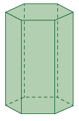
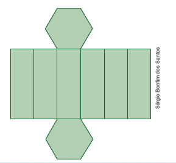
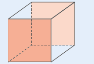
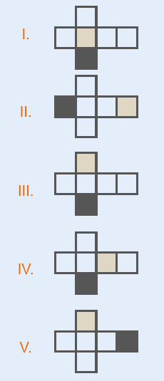
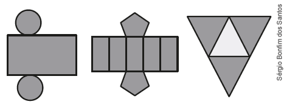

| Principais habilidades da BNCC | EF06MA17, EF06MA18 |
|---|---|
| Competências | CG9, CE2, CE8 |
Ao trabalhar com a atividade desta página, esperamos estimular o desenvolvimento do raciocínio lógico dos alunos, visto que, eles necessitam raciocinar e investigar o porquê das embalagens com formato de paralelepípedo retângulo serem mais comuns. Dessa forma, os alunos podem criar argumentos matemáticos convincentes que ajudem na compreensão do mundo e da realidade que os cerca, contemplando assim a Competência específica de Matemática 2.
Ao iniciar o estudo das planificações dos sólidos geométricos, solicite aos alunos que separem embalagens com outros formatos que não sejam com o de paralelepípedo e levem para a sala de aula. Em duplas, eles podem desmontar as embalagens e observar a sua planificação. Peça que façam a representação, por meio de desenhos, em seus cadernos.
Converse sobre os formatos levados por eles. Estes formatos são comuns? São formatos que permitem o fácil armazenamento e transporte do produto?
Estes são pontos importantes de serem abordados e estão relacionados ao custo x benefício na hora que levar os custos de produção e calcular o preço final de venda. Por que não temos tantas embalagens com formato de pirâmides, por exemplo? Uma embalagem com este formato é fácil do produto ser transportado ou armazenado?
Solicite aos alunos que façam uma pesquisa para investigar estas questões relacionadas ao formato das embalagens.
CAPÍTULO 4 - Planificação de sólidos geométricos
Lucas observou que a embalagem de pasta de dente tem o formato de um poliedro. Após retirar a pasta de dente de dentro da caixa, ele desmontou-a.
Observe:
![Figura de um manino de perfil esquerdo. Ele segura a embalagem de pasta de dente, nas cores vermelha e azul. Ao lado, a embalagem desmontada. Ela está dividida em cinco retângulos na horizontal. O primeiro tem as extremidades no formato de um triângulo com as pontas cortadas em linha reta. O segundo tem as exterminadas no formato de um retângulo na horizontal. O terceiro tem o mesmo formato do primeiro. O quarto tem o mesmo formato do segundo. O quinto e último retângulo é menor que os quatro acima.](../../resources/images/lucas.PNG)
Sérgio Bonfim dos Santos
Ao desmontar a embalagem da pasta de dente, ele obteve a forma planificada da caixa. Neste caso, as faces da embalagem têm o formato de quadriláteros.
Observe o poliedro abaixo e sua planificação.



1. Troque ideias, com o seu colega e com o professor, e depois respondam em seus cadernos às questões a seguir.
a) Qual o nome desse poliedro? Prisma de base hexagonal.
b) Quantos vértices, arestas e faces esse poliedro tem? 12 vértices, 18 arestas e 8 faces.
c) Ao planificar esse poliedro podemos observar que suas faces são formadas por quais polígonos? Retângulos e hexágonos.
d) Por que é mais comum encontrarmos embalagens no formato de para-lelepípedo? Resposta pessoal. Espera-se que o aluno diga que seja para facilitar o armazenamento.
UNIDADE 3 - CAPÍTULO 4
114
114
Sugestão de atividade
1. (ENEM) Uma empresa que embala seus produtos em caixas de papelão, na forma de hexaedro regular, deseja que seu logotipo seja impresso nas faces opostas pintadas de cinza, conforme a figura:
► A gráfica que fará as impressões dos logotipos apresentou as seguintes sugestões planificadas. Que opção sugerida pela gráfica atende ao desejo da empresa? Alternativa c.

a) I
b) II
c) III
d) V
e) V
ENCONTRE SOLUÇÕES
1. Observe os sólidos geométricos a seguir e relacione cada um deles com suas respectivas planificações. A-3; B-1; C-2.
![Três sólidos geométricos, nomeados com as letras A, B, C. A letra A tem o formato de uma pirâmide. A letra B de uma caixa de leite. A letra C de um dado. Abaixo as planificações nomeadas com os números 1, 2, 3. A planificação de número 1 tem no centro quatro retângulos na vertical. Acima do segundo retângulo, um quadrado. Abaixo do segundo retângulo, outro quadrado. A de número 2 tem no centro quatro quadrados. Acima do segundo quadrado, outro quadrado. Abaixo do segundo quadrado, outro quadrado. A de número 3, se assemelha a uma estrela. O centro é um quadrado. De cada um dos quatro lados do quadrado sai um triângulo.](../../resources/images/abc123.PNG)
2. Qual das planificações abaixo não representa a planificação de um cubo?
![Cinco figuras formadas por quadrados e nomeadas de A, B, C, D, E. A letra A tem a forma de um T. A letra B tem quadro andares no centro. Do andar superior sai um quadrado para a esquerda. Abaixo dele sai um quadrado para a direita. A letra C tem quatro andares no centro. Do andar superior sai um quadrado para a esquerda e no andar do térreo sai outro quadrado à esquerda. A letra D tem quatro andares no centro. Do andar superior sai um quadrado para a esquerda. E do andar térreo sai outro quadrado para a direita. Letra E tem o formato de uma cruz.](../../resources/images/pg117.PNG) Letra C
Letra C
3. Quais sólidos geométricos podem ser montados com as formas planificadas abaixo? A: Pirâmide de base pentagonal; B: Cone; C: Prisma de base triangular: D: Cilindro; E: Pirâmide de base hexagonal.
![Cinco figuras nomeadas de A, B, C, D, E. A letra A tem o formato de uma estrela de cinco pontas. A letra B é a quarta parte de um círculo com a parte redonda virada para baixo. Abaixo dele mais à direita, um círculo. A letra C é formada, na parte superior, por dois retângulos na diagonal, um aponta para a esquerda e o outro para a direita. No centro deles, um triângulo. O centro da figura é um retângulo na vertical. E a parte debaixo da figura é um retângulo com o vértice apontado para baixo. A letra D é um retângulo no centro. Acima dele, mais à direita, um círculo. E abaixo do retângulo, na mesma posição do círculo de cima, mais um círculo abaixo. A letra E é uma estrela com seis pontas formadas com triângulos. O centro da estrela é um hexágono.](../../resources/images/a117.PNG)
4. (ENEM) Maria quer inovar sua loja de embalagens e decidiu vender caixas com diferentes formatos. Nas imagens apresentadas estão a planificação dessas caixas.
► Quais serão os sólidos geométricos que Maria obterá a partir da planificação?
a) X Cilindro, prima de base pentagonal e pirâmide.
b) Cone, prisma de base pentagonal e pirâmide.
c) Cone, tronco de pirâmide e pirâmide.
d) Cilindro, tronco de pirâmide e prisma.
e) Cilindro, prisma e tronco de cone.
UNIDADE 3 - CAPÍTULO 4
115
115